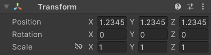
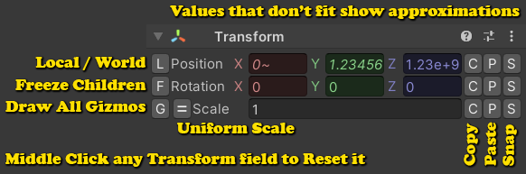

Unity's default Transform Inspector gives you a very simple interface for viewing and editing the Position, Rotation, and Scale of objects:

Inspector Gadgets adds several useful enhancements to it:

Local / World
The default Inspector only shows the Local values relative to the parent object while Inspector Gadgets allows you to toggle between [L] local space and [W] world space.
Freeze Children
The [F] button allows you to prevent changes you make to a parent object from affecting its children. Note that this is only for the Scene and Inspector controls, it won't affect the way things work at runtime.

Draw All Gizmos
This feature is only available in Inspector Gadgets Pro.
Normally Unity only draws one scene gizmo which manipulates all selected objects at once, but the [G] button gives each object its own gizmo so you can move them individually without changing your selection all the time.

Uniform Scale
Most of the time when you scale an object you want to do so on all axes so that its proportions remain the same. When the object's scale is uniform (same value on all axes) it will be shown as a single value so you don’t need to enter the same value multiple times.
- You can toggle between uniform scale mode and the regular vector mode using the
[=]button on the left. - If the scale isn’t already uniform when you enter uniform scale mode, it will be set to the average of the current values.
Utility Buttons
You can use the buttons on the right to Copy, Paste, and Snap individual transform properties (position, rotation, scale).
- The Copy and Paste buttons are integrated with the system clipboard, allowing you to copy values to and from other vector fields as well as other programs.
- Each property also has its own private clipboard, allowing you to copy a position and then a rotation at the same time without overwriting the previous value. To paste from the private clipboard, you simply Right Click the Paste button.
- You can Right Click the Copy button to log a message containing the field’s current value.
- The Snap buttons use Unity's own snap settings which can be opened by right clicking the button (or via
Edit/Snap Settings). - These buttons are greyed out when they would do nothing. I.E. Copy and Paste are greyed out if the clipboard contains the same values as the selected object, and Snap is disabled if the object is already aligned to the grid.
- You can also Middle Click on any
Transformfield to reset it to its default value.
Movement Guides
This feature is only available in Inspector Gadgets Pro.
While you are moving an object in the scene, Inspector Gadgets will indicate the position you are moving the object from and the distance you have moved it. This feature can be disabled in the Edit/Preferences/Inspector Gadgets menu.
Other Pro-Only Features
Inspector Gadgets Pro includes various additional features which are not available in the Lite version:
- You can enable and disable individual features via Edit/Preferences -> Inspector Gadgets.
- Multi-object editing (the Lite version reverts to the default
TransformInspector when multiple objects are selected). - Fields which aren’t at their default value will have a thicker border for emphasis.
- Fields which aren’t a multiple of the snap value will be shown in italics.
- Fields which are displaying scientific notation will use a smaller font size.